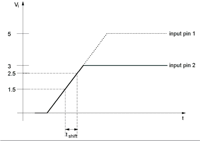
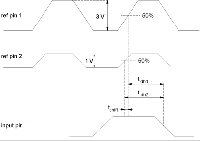

Estimate the time shift between two swings
Independent of the swing, the test system provides a constant and identical slew rate for rising and falling edges within tolerances. At a swing of 3V, the system is calibrated to the 50% swing level. In this case, the drive edges are placed so as to cross the 50% swing level at the selected timing.
Changing the swing leads to a shift of the 50% level crossing point as shown in the figure below.

The figure shows that both signals are driven at the same time independent from their swing.
The figure below shows how signals with different swings are skewed to each other.
Imagine you want to measure the input data hold time between the rising edges of a reference signal and a data input signal. Suppose you have two reference signals, one with a swing of 1V and the second with a swing of 3V. You will obtain two data hold times tdh1 and tdh2, which differ by tshift. The shift is the inevitable consequence of the fact that an infinite slew rate cannot be achieved.

To estimate the shift you can use the formula
with swing1 = 3V, swing2 = 1V and slewrate ≈ 340ps/V.
Hence, it follows for the shift in the example mentioned above:
Functional changes
- Introduced before SmarTest 6.3.2